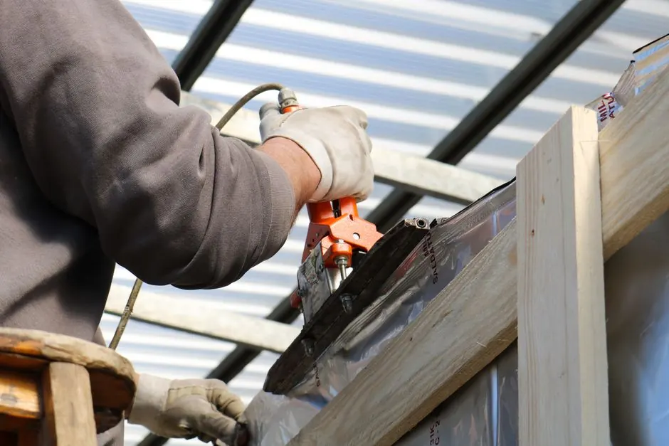
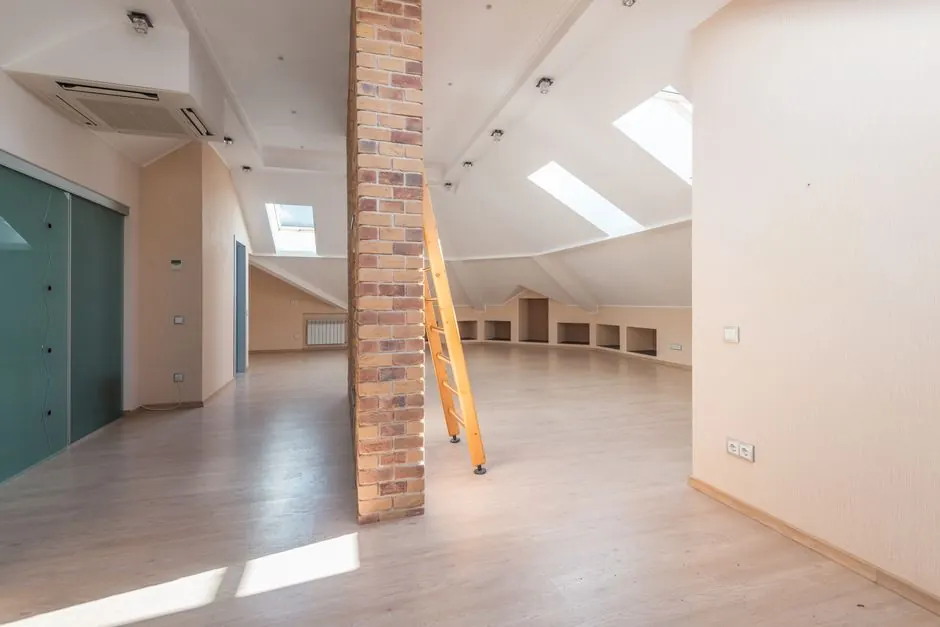
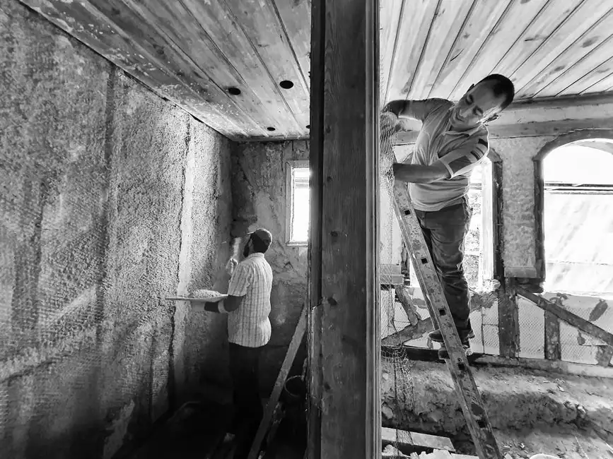

30-Year-Old Insulation Has Settled
Blown-in fiberglass and cellulose compress over time. A home installed to R-19 in 1988 may measure R-10 or less today. That gap is invisible from the living area — but your energy bill sees it every month.
Most Cy-Fair homes in 77429 and 77433 were built with R-11 to R-19 attic insulation, which is not enough for a Cypress summer and has settled further over 30 years. If your AC runs all day and upstairs rooms stay hot, the attic is usually the reason. We install, remove, and upgrade attic insulation for homeowners across Cypress and the Cy-Fair area, starting with a free attic inspection and a written estimate before any work begins.
Licensed and Insured in Texas
Written Estimate Before Any Work
Confirmed Arrival Window

Most insulation companies serving Cypress drive from Houston or The Woodlands — 30 to 45 minutes each way. Our shop is at 23407 Snook Ln in Tomball, right on Hwy 249, about 10 minutes north of Cypress Creek. That means faster scheduling, no travel-time markup, and crews who are already familiar with the homes in your area.
We have worked in Cy-Fair neighborhoods from Bridgeland down to the Barker Reservoir corridor. The homes here follow a pattern: master-planned communities developed in the 1980s and early 1990s, original blown-in insulation that has settled over 30 years, and attic temperatures that regularly exceed 150°F in summer. We know what these attics look like before we arrive.
Attic insulation directly affects how much you pay to cool your home in Cypress. Most Cy-Fair homes in 77429 and 77433 were built with R-11 to R-19 insulation along the US-290 and SH-249 corridors, and today's minimum for Harris County is R-38. That gap means your AC is working harder than it needs to every summer. Hurricanes Ike and Harvey made it worse in many homes. Insulation that absorbed moisture loses R-value and can hold mold for years without showing any visible sign.
Blown-in fiberglass and cellulose compress over time. A home installed to R-19 in 1988 may measure R-10 or less today. That gap is invisible from the living area — but your energy bill sees it every month.
Harris County sits in Climate Zone 2A — high heat, high humidity. Attic temperatures in Cypress routinely reach 140°F to 160°F from June through September. At that temperature, an under-insulated attic radiates heat into living spaces faster than most AC systems can remove it.
Hurricane Harvey dropped more than 50 inches of rain on the Cypress area in August 2017. Homes that took on any water — roof intrusion, soffit damage, or attic ventilation failure — often have insulation that absorbed moisture and never fully dried. Wet insulation loses R-value and can harbor mold. If your home flooded during Harvey or Ike, we will check the attic insulation before quoting.
Blown-in fiberglass is the right choice for most Cypress TX attic floors. It adds R-value over existing insulation in one visit without requiring removal in most cases. For homes where the existing insulation is wet, contaminated, or too compressed to build on, we remove it first and reinstall. We also install spray foam for air sealing at penetration points, and fiberglass batts for wall cavities and floor framing in new construction and re-insulation jobs.
Blown-in fiberglass fills around obstructions and reaches the corners and eaves of the attic floor. Most homes in 77429 and 77433 go from under R-20 to R-38 in a single job. We measure the depth at the end and confirm it matches what your estimate promised before we leave.
Fiberglass batts fit between wall studs and floor joists. They are used in new construction and in specific re-insulation jobs where the framing is exposed. For most existing attic floors, blown-in covers more area more evenly than batts.
Spray foam seals air gaps and adds R-value in one step. Open cell is used on attic floors and interior walls where air sealing is the primary need. Closed cell is denser, costs more, and is used on roof decks and in areas where moisture resistance matters. For attic hatches, knee walls, and rim joists it is usually the right call.
New construction allows insulation to be installed before drywall goes up, which makes wall cavity work straightforward. Re-insulation in an existing home works around finished walls, stored items, and HVAC equipment. The material and target R-value are the same. The process and access time differ. We handle both.
| Blown-In Fiberglass | Spray Foam | |
|---|---|---|
| Best for | Attic floors, top-off jobs | Hatches, knee walls, rim joists, roof deck |
| R-value per inch | R-2.2 to R-2.7 | R-3.7 (open cell) to R-6.5 (closed cell) |
| Air sealing | No, needs separate sealing | Yes, seals and insulates in one step |
| Cost | Lower | Higher |
| Typical Cypress use | Most attic floor upgrades | Penetrations and specialty areas |
Most Cypress homes need more than one type of insulation work. A home that needs blown-in on the attic floor may also need air sealing at the penetration points, injection foam in older brick walls, or a ventilation check before the heat problem is fully solved. Here's what we offer, and how we decide what your home needs.
 Spray Foam Insulation
Spray foam seals air gaps and adds R-value in one step. Open cell is used for attic floors and interior walls. Closed cell is denser and used on roof decks and in areas where moisture resistance is needed.
Explore →
Spray Foam Insulation
Spray foam seals air gaps and adds R-value in one step. Open cell is used for attic floors and interior walls. Closed cell is denser and used on roof decks and in areas where moisture resistance is needed.
Explore →
 Injection Foam Insulation
Injection foam is installed into existing wall cavities through small holes without removing drywall. It is used in finished walls where blown-in or batt insulation is not an option.
Explore →
Injection Foam Insulation
Injection foam is installed into existing wall cavities through small holes without removing drywall. It is used in finished walls where blown-in or batt insulation is not an option.
Explore →

Attic Insulation The most common upgrade for Cypress homes. Blown-in fiberglass covers the full attic floor evenly, fills around obstructions, and brings most homes from under R-20 to R-38 in a single visit. Explore → Air Sealing
Air sealing closes gaps around penetrations, attic hatches, recessed lights, and HVAC boots before insulation is installed. Without it, insulation alone does not stop conditioned air from escaping.
Explore →
Air Sealing
Air sealing closes gaps around penetrations, attic hatches, recessed lights, and HVAC boots before insulation is installed. Without it, insulation alone does not stop conditioned air from escaping.
Explore →
 Attic Fan & Ventilation
Attic ventilation reduces the heat load on your insulation. We install powered attic fans and ridge vents for homes where poor ventilation is contributing to high cooling costs.
Explore →
Attic Fan & Ventilation
Attic ventilation reduces the heat load on your insulation. We install powered attic fans and ridge vents for homes where poor ventilation is contributing to high cooling costs.
Explore →
Installing and servicing trusted equipment
Real numbers for Cy-Fair homes. No bait-and-switch estimates.
For homes where existing insulation is in good condition but R-value has settled below R-20. We blow new material over the old to reach R-38. Most Cy-Fair 1,500–1,800 sq ft attics fall in this range. Job typically takes 3–5 hours.
Required when old insulation has moisture damage, rodent contamination, or mold — which is more common in Cypress homes that took on water during Harvey. Includes removal, attic cleaning, and new blown-in to R-38. We confirm this need during the free inspection before quoting.
Stapled to the roof deck, a radiant barrier reflects radiant heat before it reaches your insulation. Worth adding in Cypress because of the long summer sun angle. Most effective when combined with R-38 blown-in below it. Not a replacement for insulation — an addition to it.
We come out and get in the attic. We measure the existing R-value, check for moisture damage, look for pest activity, and photograph what we find. You see the same photos we see before we quote anything.
We provide a written line-item estimate: what material, what R-value target, whether removal is needed, and the final price. No work starts until you approve it in writing.
Our crew arrives within the scheduled window, lays down floor protection, and completes the job — most Cypress homes in one day. We do not track debris through the house.
Before we leave, we measure the installed depth and confirm R-value matches the estimate. If anything is short, we add material before the invoice is closed.

We come out and get in the attic. We measure the existing R-value, check for moisture damage, look for pest activity, and photograph what we find. You see the same photos we see before we quote anything.
These are the four situations we see most often in Cy-Fair homes.
Ask a pro →When attic insulation is below R-20, heat radiates through the ceiling faster than AC can offset it. The fix is almost always adding blown-in to R-38 — not a larger AC unit.
A 1,800 sq ft Cypress home with R-11 insulation can spend $150–$200 more per month on cooling than a neighbor with R-38. Upgrading typically pays back in 3–5 years through energy savings.
Wet insulation loses R-value and can hold moisture for years. If your home took on water during Harvey (2017) or Ike (2008) and the attic insulation was never replaced, we will check it before quoting.
Squirrels, rats, and raccoons common in the Cypress Creek greenbelt areas nest in and compact attic insulation. We remove contaminated material, treat the attic, and install new blown-in. We do not try to upsell rodent-proofing on clean attics.
“Our house was built in 1988 off Huffmeister and the attic insulation had never been touched. The crew showed us exactly what R-value we had, explained what we needed, and did not try to sell us anything extra. The estimate matched the final bill. We noticed the difference the first week.”
Sandra M.Homeowner, Cypress TX
✓ Verified“I called three companies for our Cypress home. These guys were the only ones who actually got in the attic before quoting. Found old blown-in that had settled down to almost nothing. They know what they are talking about. Very knowledgeable, showed up on time, job done in one day.”
Derek T.Homeowner, Cy-Fair
✓ Verified“After Harvey we had some moisture damage in the attic. They removed the old insulation, treated for mold, and put in new blown-in plus a radiant barrier. My AC runs noticeably less now. The price was fair and they did not leave a mess.”
Linda F.Homeowner, Cypress TX
✓ VerifiedWe work throughout Cypress and the surrounding Cy-Fair communities — from the Bridgeland area near Barker Cypress Road north to Spring-Cypress Road, and from Hwy 290 east to Huffmeister. Our Tomball location on Hwy 249 puts us closer to Cypress than any Houston-based competitor.
Not sure you're in range? Call with your ZIP code — we cover 77433, 77429, 77095, 77084, and surrounding areas.
Common questions from Cy-Fair homeowners about attic insulation costs, R-values, and what to expect.
+1 409-996-4620 →For a typical Cypress TX home with a 1,500–2,200 sq ft attic, costs run $1,400 to $3,200. A blown-in top-off (adding over existing insulation to reach R-38) usually lands between $1,400 and $2,200. Full removal and reinstall — needed when there is moisture damage or pest contamination — runs $2,200 to $3,200. We provide a written estimate after the free inspection so you know the exact number before agreeing to anything.
Harris County is in IECC Climate Zone 2A. The current energy code minimum for attic insulation is R-38. Most Cy-Fair homes built before 2000 have R-11 to R-19 — well below that standard. Upgrading to R-38 reduces cooling load significantly, which is the main driver of high summer energy bills in Cypress. Some homeowners go to R-49 for additional savings, especially in homes with large south- or west-facing roof sections.
Yes, in most Cypress homes. Attic temperatures here regularly hit 140–160°F in summer. A radiant barrier stapled to the roof deck reflects radiant heat before it reaches your insulation and living area. It works best when combined with adequate blown-in insulation below it — not instead of it. Most homeowners see noticeable improvement in upstairs room temperatures and AC run time after adding both.
Not always. If existing insulation is dry, clean, and free of pest contamination, we blow new material on top to reach R-38. This saves cost and time. However, Cypress homes that took on water during Harvey (2017) or Ike (2008) often have moisture-damaged insulation that must come out first. We check this during the free attic inspection and tell you upfront whether removal is required.
Four signs: your AC runs constantly in summer but rooms near the roofline stay hot; your energy bill is notably higher than neighbors in similar-sized homes; you can see bare joists in the attic (insulation has settled); or the home was built before 1995 and insulation has never been replaced. If you are not sure, call us — we will come out and measure the R-value for free, with no obligation to book.
Our shop is on Hwy 249 in Tomball — about 10 minutes north of Cypress Creek. Most insulation companies serving Cypress operate out of Houston or The Woodlands and drive 30–45 minutes each way. We are already in the area, which means faster scheduling, same-week availability, and no travel-time cost built into the estimate.
We inspect the attic, measure the existing R-value, and give you a written number before any work starts. Same-week appointments available.
Request a Quote →We are based in Tomball on Hwy 249 — about 10 minutes from Cypress Creek. Call or fill out the form and we will confirm a same-week inspection time. Estimates are written, itemized, and provided before any work begins.